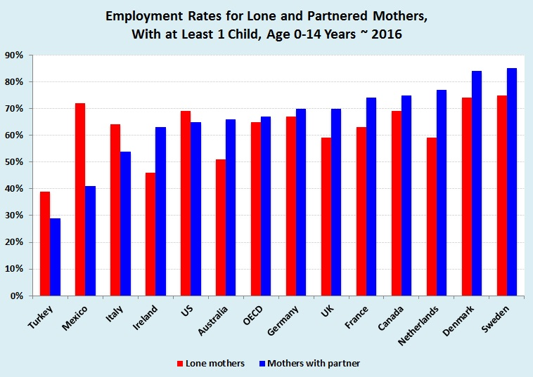
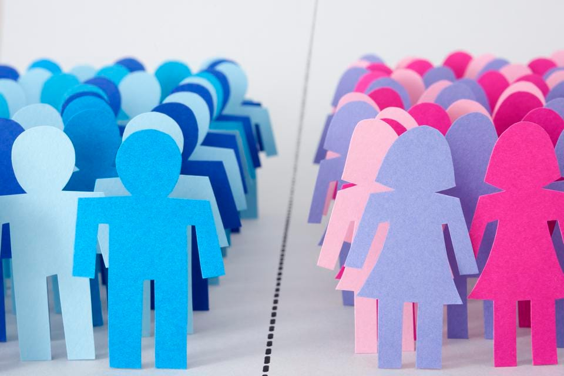

Topics
Gender Roles
What is gender roles? Why is it to important to understand it?

Examples
Few examples of social beliefs to gender role
Solutions
Answer that might got help for this topic
Social Beliefs in Gender Role
(Name Subject to Change)
(Name Subject to Change)
Overview
Content of this website
Gender role beliefs are widely held beliefs
about what roles are appropriate for men and appropriate for women. For example,
girls and women are generally expected to dress in typically feminine ways and be
polite, accommodating, and nurturing. Men are generally expected to be strong,
aggressive, and bold.
Every society, ethnic group, and culture has gender role expectations, but they
can be very different from group to group. This way they develop their own ideas,
expectations and norms about how men and women behave, which will subsequently
influence how they process and experience gender-related information.
What is gender roles? Why is it to important to understand it?
Few examples of social beliefs to gender role
Answer that might got help for this topic
Examples
These beliefs are related to a larger focus being placed on Parents, OFW’s, and Worker’s careers and child’s future. The social identities of particular women and men, projected future social positions, and short- and long-term aspirations are then likely to be influenced by such ideas.
That women stays home doing household chores and childcare while men should do the work.
In public places, we saw more men than women outside the home. You can see it either in the workplace, offices, governments, or even the commuters. Not only in the Philippines, but also in other countries based on YaleGlobal Online Data. (The database was started back in 2016).
In addition, childrearing increases levels of part-time work among mothers. In most countries, the incidence of part-time employment is higher for women than men. For mothers with young children, the impact of having a partner or being a single parent is mixed. In some workplaces, women earn less than men. So if childcare becomes unaffordable, it’s more likely that the mother in this scenario will give up work. Also of experiencing guilt more than men do, and worry more about the effect on their children of having two working parents.
Gender Stereotypes
Like this video, it discusses what gender roles and stereotypes actually are. It explores how and why people believe that males should work and support the family while women should stay at home. In the film's description, the creator also mentioned how Gender Stereotypes were present in their daily lives and that they intended to spread awareness by creating and sharing the video.
Parenting
Example of this is from a Quora user named Michelle Plummer. Based on her profile, she answers some common questions like how to raise a child or how she feels about being a housewife.
.png)
Solution
Teach your children. Students should be
given the chance to identify the gender-biased attitudes and notions
that will impede them from becoming their actual selves and attaining
their full potential if they do not challenge them, which is why gender
stereotype education is very important.
As an adult or parent, we should look after the kids when they reach a
certain stage. Parents must directly communicate their beliefs about
gender by providing instruction, guidance, and training to their
children.